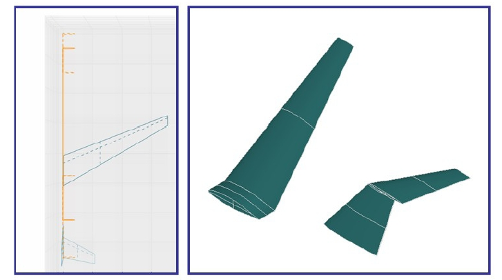

As already outlined, one of the requirements for a conceptual design module is closing the gap between TLAR and a dataset sufficient enough to trigger higher level methods. An increase in information is equivalent to a transfer from a system with lower dimensionality to a system with more dimensions. Hence this can only be carried out using additional (design) knowledge. By utilizing techniques from KBE this process can be coded and automated. For the purposes of this project it was important to generate the parametric geometry description as defined by CPACS out of the reduced parameter set of the conceptual design module. As we are currently focussing on civil jet transport, a sufficient database to retrieve rules for a KBE approach is available. Additionally, data generated by VAMPzero, mainly mass distributions, moments of intertia, as well as tool-specific data are transfered to CPACS. Thereby product and process knowledge are used.
An example for a cpacsExport method that was implemented to the wing component can be seen in Figure 8. As the horizontal and vertical tail inherit the wing component, the same methods can be applied easily. The upward change in level of detail can only be realized by applying knowledge-based rules and hence this process should usually be monitored by an engineer-in-the-loop.
Both CPACS and VAMPzero are coded in object-oriented languages. Although CPACS is more a schema definition than tool it was possible to extract libraries from this definition that allowed for easy handling of objects. Generating CPACS-like objects and exporting them in the correct syntax is therefore integrated in VAMPzero without implementing additional code fragments.
The calculation methods within VAMPzero define a simple trapezoid wing. To extend the output geometry VAMPzero can produce several wing structures via similarity transformation. Due to the value of the wings ‘LoD’ parameter one of the following geometries will be exported:
As said, the generation of advanced wing geometries needs additional information. To assure the similarity between the trapezoid wing within VAMPzero and the generated advanced wing geometry, the dimensionless numbers will be kept constant during the transformation. The dimensionless numbers kept from the original trapezoid wing are the following:
The reference area is used for dimensioning the wing. Details on the geometry generation can be found in [...].
For the generation of a complex fuselage geometry, a database is used. At the moment there is only one complex fuselage geometry to choose from, but there will be more geometries available in the future. The geometries for the nose, middle and tail can be chosen individually.
{kind=link}